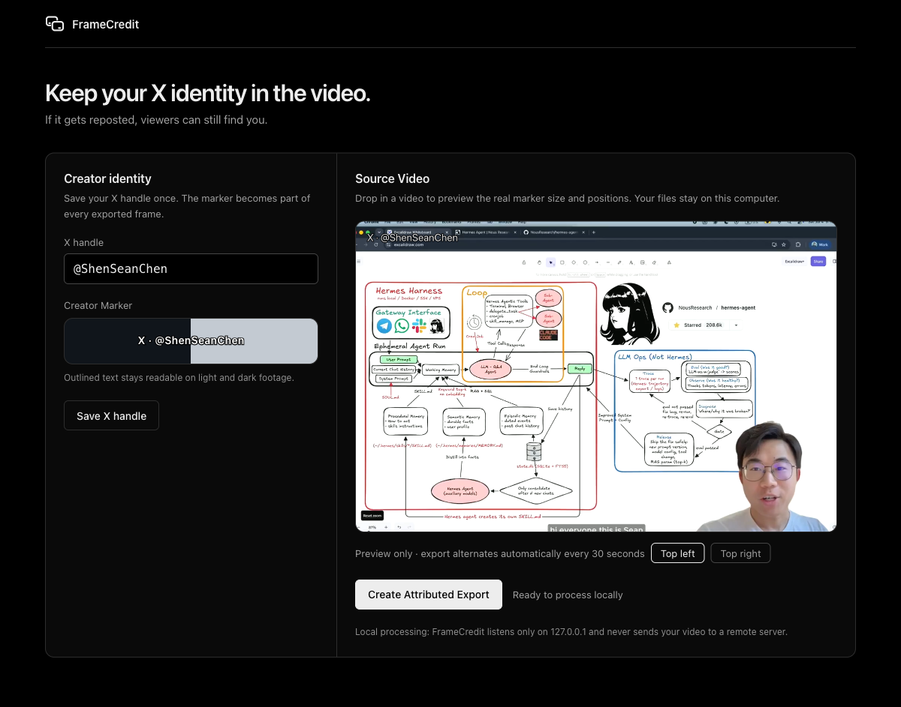

Your handle on every frame.
FrameCredit burns your X handle into your video before you publish, so reposted copies still credit you.

What is FrameCredit?
FrameCredit is a local video attribution tool for X creators. It burns a compact X · @handle Creator Marker into the frames of your video before you publish, so downloaded and reposted copies still show viewers who made it.
- Rendered into the pixels, so stripping metadata does not remove it.
- Video processing stays local; the app binds to
127.0.0.1and uploads nothing. - Viewers can search for your handle even when a repost carries no link back.
How FrameCredit works
Three steps, all on your own machine.
-
Save your X handle once
FrameCredit remembers it and previews the exact marker before anything is burned in.
-
Drop in a video
FrameCredit burns the outlined marker into every frame, alternating top corners every 30 seconds.
-
Publish the Attributed Export
Upload the finished H.264/AAC MP4 from
~/Movies/FrameCreditto X as usual.
The Creator Marker
- Reads
X · @yourhandle, so viewers know both the platform and the searchable account. - Transparent outlined text. No opaque card sits behind it.
- Alternates between top-left and top-right every 30 seconds.
- Stays in the top corners, clear of the subtitle region.
- Compact by design: it identifies you without obscuring the content.
Outlined text stays readable on light and dark footage.
Install FrameCredit
Requires ffmpeg and ffprobe; uv manages Python for you.
macOS
brew install uv ffmpegWindows
winget install astral-sh.uv
winget install --id Gyan.FFmpeg.Essentials -e --source wingetDebian/Ubuntu
sudo apt update && sudo apt install ffmpeg
curl -LsSf https://astral.sh/uv/install.sh | shThen, in a new terminal:
uv tool install framecredit
framecredit appframecredit app opens the drag-and-drop interface on 127.0.0.1; Attributed Exports land in ~/Movies/FrameCredit. Prefer the terminal? framecredit process input.mp4 --x-handle "@yourhandle" --output attributed.mp4
Alternative installation (pip, from source)
python3 -m pip install framecreditNeeds your own Python 3.11+. Upgrade with python3 -m pip install -U framecredit or uv tool upgrade framecredit. Development version:
git clone https://github.com/huaruic/framecredit.git
cd framecredit
python3 -m pip install -e .Processed locally, start to finish
Your video never leaves your machine. The app binds to 127.0.0.1 only; there are no accounts, no cloud processing, and no platform APIs.
What FrameCredit does not promise
FrameCredit’s promise is Attribution Survival, not theft prevention. It makes your identity travel with an Ordinary Repost: a copied upload that keeps most of the content, including re-encodes and light edits. It does not try to make copying impossible.
A burned-in marker is pixels, not a hyperlink. It cannot be a clickable link or a QR code; a mention becomes clickable only in X post text, which an independently re-uploaded file cannot preserve.
Determined editing can defeat any visible marker. Someone willing to crop, cover, or reconstruct frames can remove attribution, and that remains outside what FrameCredit claims to solve.
Frequently asked questions
How do I keep credit when my video is reposted on X?
Burn your identity into the frames before you publish. FrameCredit adds a compact X · @handle Creator Marker to every frame, so an ordinary repost, even one that is re-encoded or lightly edited, still shows viewers who made the video and which account to search for.
Does FrameCredit upload my video?
No. FrameCredit runs entirely on your computer. The local app listens only on 127.0.0.1, your video is streamed to the FrameCredit process on the same machine, and the finished Attributed Export is written to ~/Movies/FrameCredit by default. Nothing is sent to a remote service.
What does the Creator Marker look like?
A compact single line of outlined text that reads X · @yourhandle. It uses transparent outlined lettering instead of an opaque card, stays readable over light and dark footage, and alternates between the two top corners every 30 seconds, away from the subtitle region.
Can a reposter remove the marker?
A determined editor can crop, cover, or paint over any visible marker, and FrameCredit does not claim otherwise. It changes the common case instead: ordinary reposts that download and re-upload your file, including re-encodes and light edits, keep your handle visible inside the frames.
What formats does FrameCredit output?
One MP4 file with H.264 video and AAC audio, chosen for broad upload compatibility. The Attributed Export keeps the source dimensions and audio track, and its duration stays within 150 milliseconds of the source video.
What do I need to run FrameCredit?
Python 3.11 or later, plus ffmpeg and ffprobe on your PATH. Install it from PyPI with pip install framecredit. It ships as a command line tool with an optional local drag-and-drop app started by framecredit app.
Do I need to know Python to use FrameCredit?
No. Install the uv tool and ffmpeg, then run uv tool install framecredit; uv downloads and manages Python for you. After that a single command, framecredit app, opens the drag-and-drop interface in your browser. The install section above has copy-paste commands for macOS, Windows, and Linux.
Where are Attributed Exports saved?
The command writes wherever you point --output. The local app writes Attributed Exports to ~/Movies/FrameCredit by default and shows the exact output path in its result panel, where you can open the finished video directly.